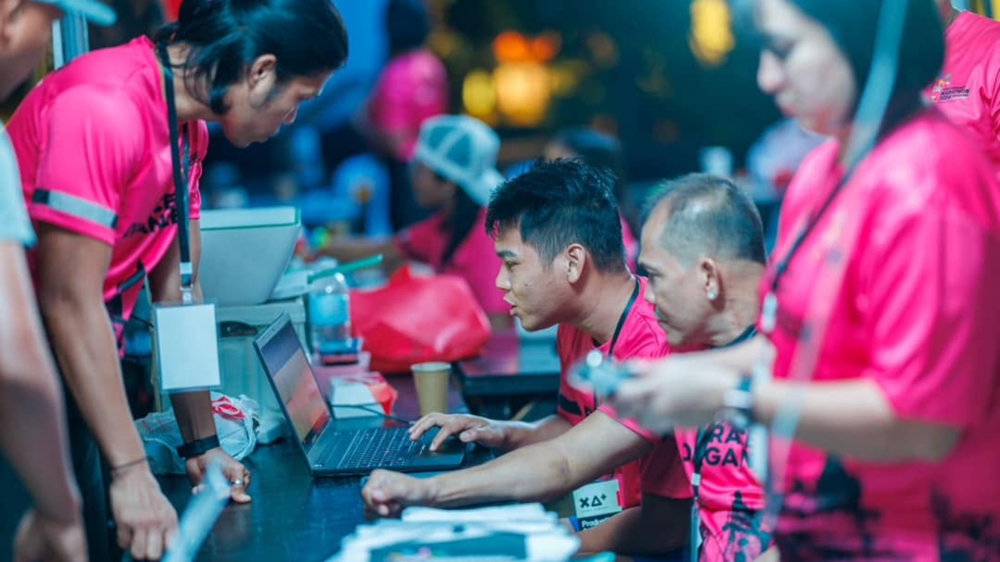
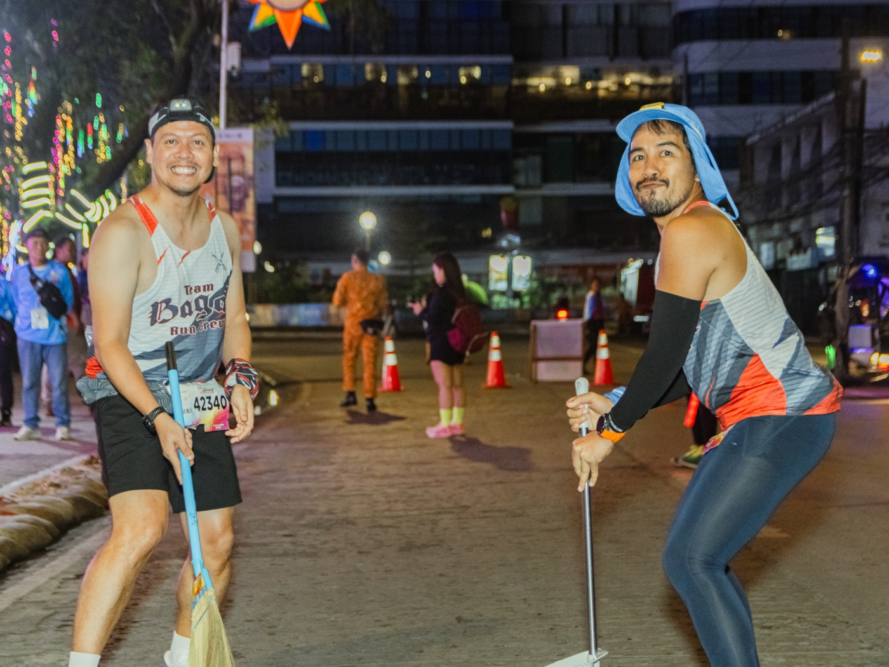
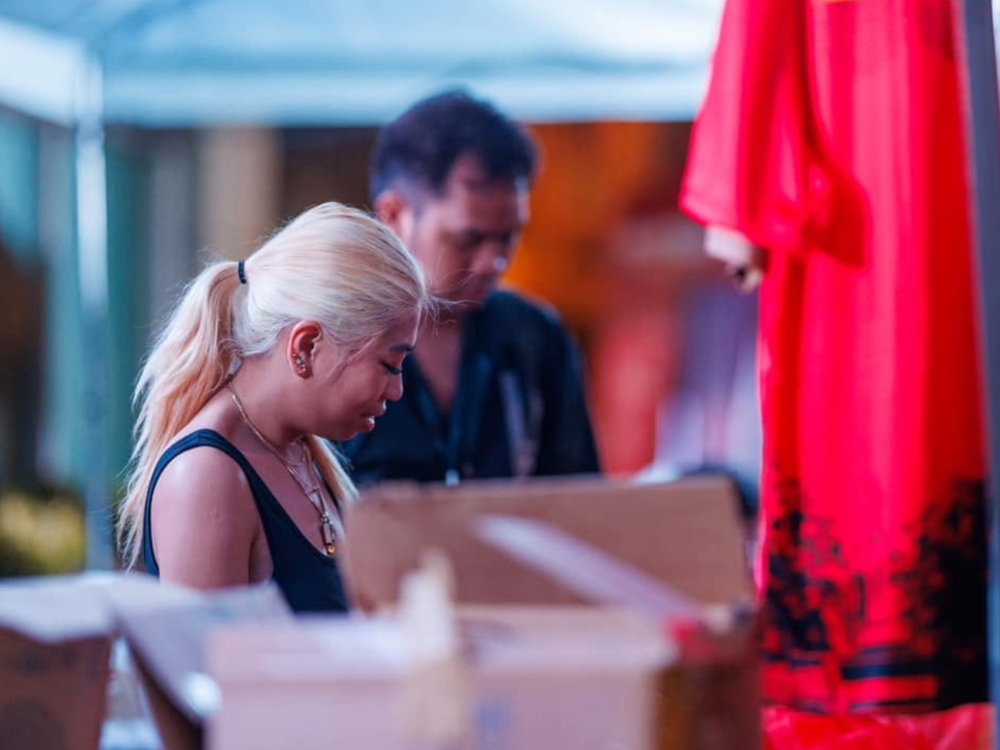
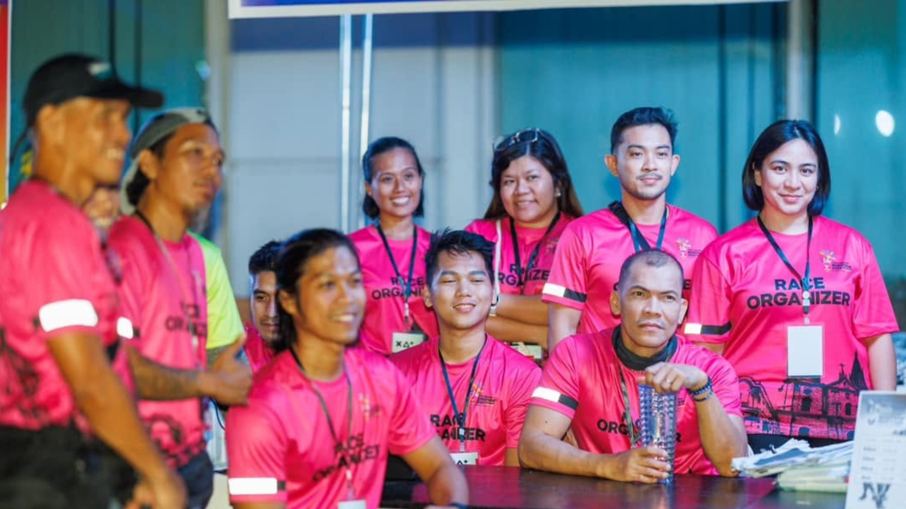

HERITAGE RUN 4 · VOLUNTEER TEAM
It's the people behind them.
01 — WHY VOLUNTEER
Every runner who crosses the finish line has a team of people helping make that moment possible.
From the first runner at the starting line to the final finisher of the day, volunteers are part of the energy, organization, and encouragement that brings race day to life.
Join the Heritage Run 4 volunteer team and experience the race from a completely different perspective.

02 — THE EXPERIENCE
Experience the energy of race day from the inside and be part of the moments that runners remember.
A cup of water, a direction, a medal, or a simple word of encouragement can make a difficult kilometer feel easier.
Meet fellow volunteers, runners, organizers, and supporters who share a passion for running and community.
Get a closer look at the teamwork, preparation, and coordination that runners rarely see.
Gain practical experience in event operations, communication, teamwork, and race-day coordination.
You may not be the one crossing the finish line, but you could be part of the moment a runner remembers forever.
03 — FIND YOUR ROLE
Tell us where you'd like to help. We'll work with you to build a team that keeps race day moving.
Help prepare and distribute designated race kits before race start.
Support runners at hydration stations and help keep the area organized.
Help organize runners before the race and guide participants to the correct starting areas.
Help runners navigate race-day services and answer common event questions.
Guide finishers through the finish area and help maintain smooth runner flow.
Deliver one of the most memorable moments of race day — the finisher medal.
Help finishers receive their commemorative finisher shirt and keep distribution organized.
Help runners transition from race mode to recovery and direct them toward available services.
Assist runners with organized and orderly baggage retrieval after the race.

04 — THE COMMUNITY
Every volunteer becomes part of the story that makes race day possible.

HERITAGE RUN 4 · VOLUNTEER TEAM
Bring your energy. Bring your time. Help us make race day unforgettable.
Become a Volunteer